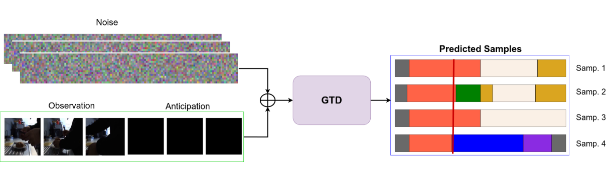

|
Olga Zatsarynna I'm a PhD student at the University of Bonn, Germany at the Computer Vision group led by Prof. Dr. Juergen Gall . Previously, I completed my Masters degree at the University of Bonn, Germany under the supervision of Prof. Dr. Juergen Gall and my Bachelors degree in the Kharkiv National Karazin University, Ukraine under the serupervision of Dr. Pavlo Barkhayev . My research broadly focuses on video understanding. More concretely, I am interested in such such topics as: long-term and short-term action forecasting, temporal action segmentation, unintentional action prediction.This website is currently under consturction :) Email / CV / Google Scholar / Github |

|
News07.2024 One paper accepted to ECCV'24! You can check it here: Gated Temporal Diffusion for Stochastic Long-term Dense Anticipation. 07.2024 I was awarded Outstanding reviewer at ECCV'24! |
Publications |
|  |
Gated Temporal Diffusion for Stochastic Long-Term Dense Anticipation
Olga Zatsarynna* , Emad Bahrami*, Yazan Abu Farha, Gianpiero Francesca, Juergen Gall ECCV, 2024 * denotes equal contribution Code |
Miscellanea |
Academic Service |
Reviewer for: ICCV'25, CVPR'25, ECCV'24, ICCVW'23. Co-organizer: GCPR'21. |
Teaching |
Exercise Instructor at University of Bonn for:
Video Analytics ;
Computer Vision ;
Advanced Computer Vision ;
Computer Vision Lab and
Computer Vision Seminar .
|
|
Website template from Jon Barron. |